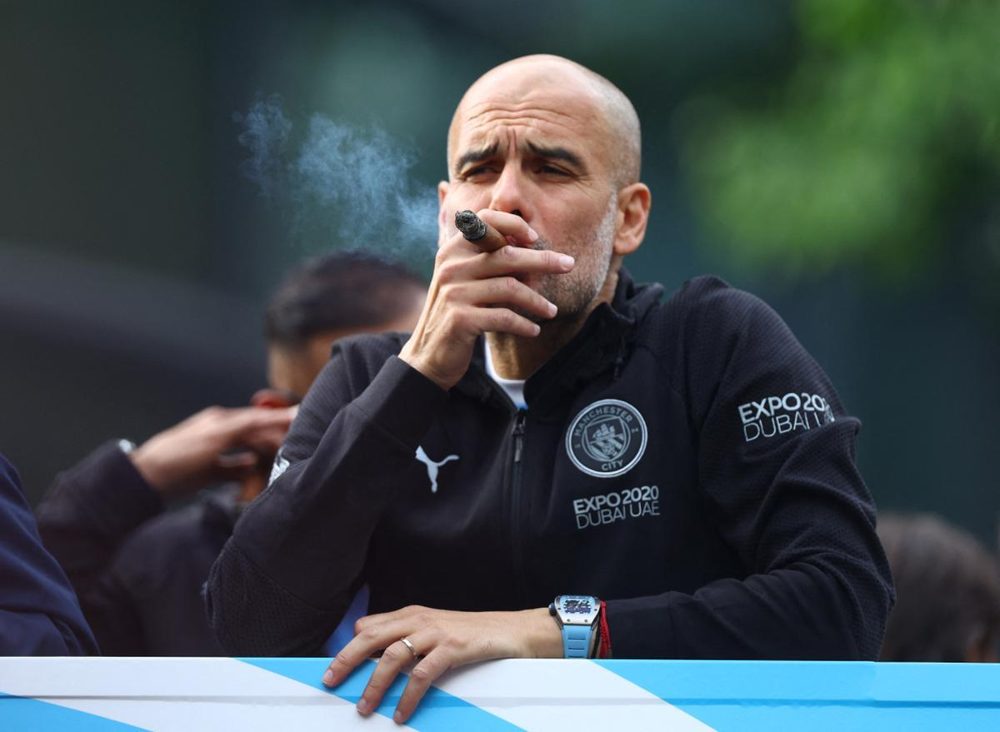

Pep Guardiola - Director Técnico
Pep Guardiola entró en el podio de los entrenadores más laureados de todos los tiempos en 2023 con 34 títulos, ocupa la segunda posición.
Mircea Lucescu es el tercero de esta lista. Su paso por Dinamo Bucarest, Brescia, Rapid Bucarest, Galatasaray, Shakhtar Donetsk, Zenit y Dynamo Kiev, curiosamente el club donde Lobanovski forjó su leyenda, se traducen en 33 títulos. Una carrera que sigue en curso.
En lo más alto del cajón está sir Alex Ferguson con 49 títulos, entre el St. Mirren y Aberdeen suman once, más los 38 trofeos nacionales e internacionales con el Manchester United.